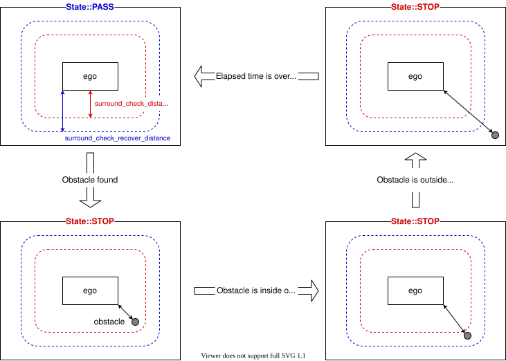

Surround Obstacle Checker#
Purpose#
This module subscribes required data (ego-pose, obstacles, etc), and publishes zero velocity limit to keep stopping if any of stop conditions are satisfied.
Inner-workings / Algorithms#
Flow chart#
![uml diagram]()

Algorithms#
Check data#
Check that surround_obstacle_checker receives no ground pointcloud, dynamic objects and current velocity data.
Get distance to nearest object#
Calculate distance between ego vehicle and the nearest object. In this function, it calculates the minimum distance between the polygon of ego vehicle and all points in pointclouds and the polygons of dynamic objects.
Stop requirement#
If it satisfies all following conditions, it plans stopping.
- Ego vehicle is stopped
- It satisfies any following conditions
- The distance to nearest obstacle satisfies following conditions
- If state is
State::PASS, the distance is less thansurround_check_distance - If state is
State::STOP, the distance is less thansurround_check_recover_distance
- If state is
- If it does not satisfies the condition in 1, elapsed time from the time it satisfies the condition in 1 is less than
state_clear_time
- The distance to nearest obstacle satisfies following conditions
States#
To prevent chattering, surround_obstacle_checker manages two states.
As mentioned in stop condition section, it prevents chattering by changing threshold to find surround obstacle depending on the states.
State::PASS: Stop planning is releasedState::STOP：While stop planning
Inputs / Outputs#
Input#
| Name | Type | Description |
|---|---|---|
/perception/obstacle_segmentation/pointcloud |
sensor_msgs::msg::PointCloud2 |
Pointcloud of obstacles which the ego-vehicle should stop or avoid |
/perception/object_recognition/objects |
autoware_perception_msgs::msg::PredictedObjects |
Dynamic objects |
/localization/kinematic_state |
nav_msgs::msg::Odometry |
Current twist |
/tf |
tf2_msgs::msg::TFMessage |
TF |
/tf_static |
tf2_msgs::msg::TFMessage |
TF static |
Output#
| Name | Type | Description |
|---|---|---|
~/output/velocity_limit_clear_command |
autoware_internal_planning_msgs::msg::VelocityLimitClearCommand |
Velocity limit clear command |
~/output/max_velocity |
autoware_internal_planning_msgs::msg::VelocityLimit |
Velocity limit command |
~/output/no_start_reason |
diagnostic_msgs::msg::DiagnosticStatus |
No start reason |
~/debug/marker |
visualization_msgs::msg::MarkerArray |
Marker for visualization |
~/debug/footprint |
geometry_msgs::msg::PolygonStamped |
Ego vehicle base footprint for visualization |
~/debug/footprint_offset |
geometry_msgs::msg::PolygonStamped |
Ego vehicle footprint with surround_check_distance offset for visualization |
~/debug/footprint_recover_offset |
geometry_msgs::msg::PolygonStamped |
Ego vehicle footprint with surround_check_recover_distance offset for visualization |
Parameters#
| Name | Type | Description | Default | Range |
|---|---|---|---|---|
| pointcloud.enable_check | boolean | enable to check surrounding pointcloud | false | N/A |
| pointcloud.surround_check_front_distance | float | If objects exist in this distance, transit to "exist-surrounding-obstacle" status. [m] | 0.5 | ≥0.0 |
| pointcloud.surround_check_side_distance | float | If objects exist in this distance, transit to "exist-surrounding-obstacle" status. [m] | 0.5 | ≥0.0 |
| pointcloud.surround_check_back_distance | float | If objects exist in this distance, transit to "exist-surrounding-obstacle" status. [m] | 0.5 | ≥0.0 |
| unknown.enable_check | boolean | enable to check surrounding unknown objects | true | N/A |
| unknown.surround_check_front_distance | float | If objects exist in this distance, transit to "exist-surrounding-obstacle" status. [m] | 0.5 | ≥0.0 |
| unknown.surround_check_side_distance | float | If objects exist in this distance, transit to "exist-surrounding-obstacle" status. [m] | 0.5 | ≥0.0 |
| unknown.surround_check_back_distance | float | If objects exist in this distance, transit to "exist-surrounding-obstacle" status. [m] | 0.5 | ≥0.0 |
| car.enable_check | boolean | enable to check surrounding car | true | N/A |
| car.surround_check_front_distance | float | If objects exist in this distance, transit to "exist-surrounding-obstacle" status. [m] | 0.5 | ≥0.0 |
| car.surround_check_side_distance | float | If objects exist in this distance, transit to "exist-surrounding-obstacle" status. [m] | 0.5 | ≥0.0 |
| car.surround_check_back_distance | float | If objects exist in this distance, transit to "exist-surrounding-obstacle" status. [m] | 0.5 | ≥0.0 |
| truck.enable_check | boolean | enable to check surrounding truck | true | N/A |
| truck.surround_check_front_distance | float | If objects exist in this distance, transit to "exist-surrounding-obstacle" status. [m] | 0.5 | ≥0.0 |
| truck.surround_check_side_distance | float | If objects exist in this distance, transit to "exist-surrounding-obstacle" status. [m] | 0.5 | ≥0.0 |
| truck.surround_check_back_distance | float | If objects exist in this distance, transit to "exist-surrounding-obstacle" status. [m] | 0.5 | ≥0.0 |
| bus.enable_check | boolean | enable to check surrounding bus | true | N/A |
| bus.surround_check_front_distance | float | If objects exist in this distance, transit to "exist-surrounding-obstacle" status. [m] | 0.5 | ≥0.0 |
| bus.surround_check_side_distance | float | If objects exist in this distance, transit to "exist-surrounding-obstacle" status. [m] | 0.5 | ≥0.0 |
| bus.surround_check_back_distance | float | If objects exist in this distance, transit to "exist-surrounding-obstacle" status. [m] | 0.5 | ≥0.0 |
| trailer.enable_check | boolean | enable to check surrounding trailer | true | N/A |
| trailer.surround_check_front_distance | float | If objects exist in this distance, transit to "exist-surrounding-obstacle" status. [m] | 0.5 | ≥0.0 |
| trailer.surround_check_side_distance | float | If objects exist in this distance, transit to "exist-surrounding-obstacle" status. [m] | 0.5 | ≥0.0 |
| trailer.surround_check_back_distance | float | If objects exist in this distance, transit to "exist-surrounding-obstacle" status. [m] | 0.5 | ≥0.0 |
| motorcycle.enable_check | boolean | enable to check surrounding motorcycle | true | N/A |
| motorcycle.surround_check_front_distance | float | If objects exist in this distance, transit to "exist-surrounding-obstacle" status. [m] | 0.5 | ≥0.0 |
| motorcycle.surround_check_side_distance | float | If objects exist in this distance, transit to "exist-surrounding-obstacle" status. [m] | 0.5 | ≥0.0 |
| motorcycle.surround_check_back_distance | float | If objects exist in this distance, transit to "exist-surrounding-obstacle" status. [m] | 0.5 | ≥0.0 |
| bicycle.enable_check | boolean | enable to check surrounding bicycle | true | N/A |
| bicycle.surround_check_front_distance | float | If objects exist in this distance, transit to "exist-surrounding-obstacle" status. [m] | 0.5 | ≥0.0 |
| bicycle.surround_check_side_distance | float | f objects exist in this distance, transit to "exist-surrounding-obstacle" status. [m] | 0.5 | ≥0.0 |
| bicycle.surround_check_back_distance | float | If objects exist in this distance, transit to "exist-surrounding-obstacle" status. [m] | 0.5 | ≥0.0 |
| pedestrian.enable_check | boolean | enable to check surrounding pedestrian | true | N/A |
| pedestrian.surround_check_front_distance | float | If objects exist in this distance, transit to "exist-surrounding-obstacle" status. [m] | 0.5 | ≥0.0 |
| pedestrian.surround_check_side_distance | float | If objects exist in this distance, transit to "exist-surrounding-obstacle" status. [m] | 0.5 | ≥0.0 |
| pedestrian.surround_check_back_distance | float | If objects exist in this distance, transit to "exist-surrounding-obstacle" status. [m] | 0.5 | ≥0.0 |
| surround_check_hysteresis_distance | float | If no object exists in this hysteresis distance added to the above distance, transit to "non-surrounding-obstacle" status [m] | 0.3 | ≥0.0 |
| state_clear_time | float | Threshold to clear stop state [s] | 2.0 | ≥0.0 |
| stop_state_ego_speed | float | Threshold to check ego vehicle stopped [m/s] | 0.1 | ≥0.0 |
| publish_debug_footprints | boolean | Publish vehicle footprint & footprints with surround_check_distance and surround_check_recover_distance offsets. | true | N/A |
| debug_footprint_label | string | select the label for debug footprint | car | ['pointcloud', 'unknown', 'car', 'truck', 'bus', 'trailer', 'motorcycle', 'bicycle', 'pedestrian'] |
| Name | Type | Description | Default value |
|---|---|---|---|
enable_check |
bool |
Indicates whether each object is considered in the obstacle check target. | true for objects; false for point clouds |
surround_check_front_distance |
bool |
If there are objects or point clouds within this distance in front, transition to the "exist-surrounding-obstacle" status [m]. | 0.5 |
surround_check_side_distance |
double |
If there are objects or point clouds within this side distance, transition to the "exist-surrounding-obstacle" status [m]. | 0.5 |
surround_check_back_distance |
double |
If there are objects or point clouds within this back distance, transition to the "exist-surrounding-obstacle" status [m]. | 0.5 |
surround_check_hysteresis_distance |
double |
If no object exists within surround_check_xxx_distance plus this additional distance, transition to the "non-surrounding-obstacle" status [m]. |
0.3 |
state_clear_time |
double |
Threshold to clear stop state [s] | 2.0 |
stop_state_ego_speed |
double |
Threshold to check ego vehicle stopped [m/s] | 0.1 |
stop_state_entry_duration_time |
double |
Threshold to check ego vehicle stopped [s] | 0.1 |
publish_debug_footprints |
bool |
Publish vehicle footprint with/without offsets | true |
Assumptions / Known limits#
To perform stop planning, it is necessary to get obstacle pointclouds data. Hence, it does not plan stopping if the obstacle is in blind spot.